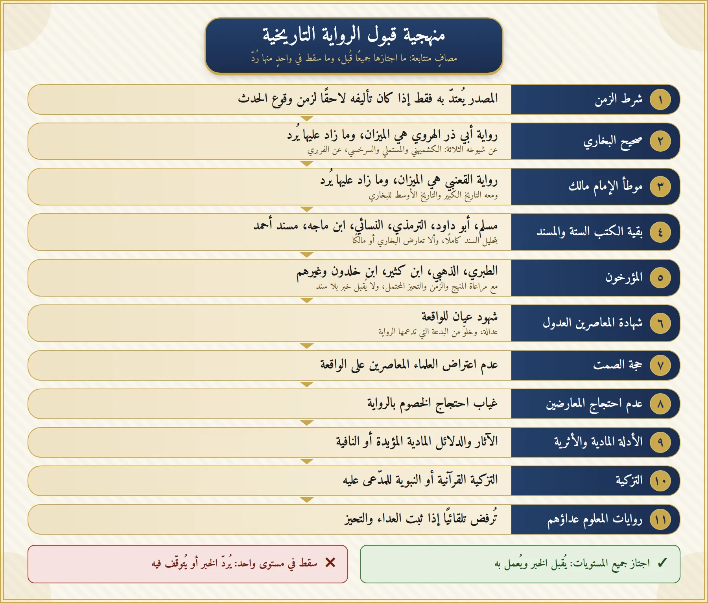

التعامل مع الروايات التاريخية يقوم على عدم قبول أي خبر أو رواية إلا بعد إخضاعها لمجموعة من المعايير المتدرجة، تعمل كمرشحات متتابعة تنقّي الرواية من الشوائب وتكشف مواضع الضعف والشك فيها. فما اجتاز هذه المعايير قُبل واعتُمد، وما سقط في واحدٍ منها أو أكثر رُدَّ ولم يُلتفت إليه.
نعلم جيدًا أن القارئ قد يتفاجأ بما يخالف معتقدًا تربّى عليه أو درسه، ونحن هنا لا نريد الدخول في جدال، وإنما نريد وضع آلية نتفق عليها في عرض الأخبار التي تصلنا، سواء قديمًا أو حديثًا، لتنقيتها من الشوائب واللا منطقية.
وتُعرض الرواية على المستويات الأحد عشر بالترتيب، وأولها شرط الزمن. والمستويان الثاني والثالث (صحيح البخاري برواية أبي ذر الهروي، والموطأ برواية القعنبي) هما الميزان الذي تُعرض عليه سائر الروايات: فما زادته رواية أخرى عليهما أو خالفتهما فيه لا يُعتدّ به، إلا بدليل من صنيع البخاري أو نصّ إمام من الأئمة المتقدمين.
لماذا البخاري ومالك أولًا؟
نحن بعد القرآن نرجع إلى ما يتفق عليه عامة العلماء، وهو صحيح البخاري. ولكن قبل أن يقفز الذهن إلى ما فهمه الآن، فالبخاري مثله مثل أي كتاب من صنع البشر، عرضة للتحريف أو التصحيف. لذلك نرجع إلى أعلم المحققين بالمخطوطات وأدقّ النسخ وأثبتها للاعتماد عليها: أجمع علماء الحديث والمحققون أن أثبت وأضبط تلاميذ البخاري هو العلامة الفربري، وعن أضبط تلامذته (الكشميهني والمستملي والسرخسي) روى الإمام أبو ذر الهروي. لذلك نعتمد فقط على هذه الرواية في الموقع، ونجعلها الميزان الذي تُعرض عليه سائر روايات الصحيح.
ثم بعد البخاري نعتمد على موطأ الإمام مالك لجلالته وتحرّيه في انتقاء الرواة، وحذره الشديد من روايات الكوفيين، فلم يكن يروي إلا عمّن يثق بدينه وضبطه. واعتمدنا رواية أضبط رواته عنه، عبد الله بن مسلمة القعنبي؛ قال علي بن المديني: «لا يُقدَّم من رواة الموطأ أحدٌ على القعنبي»، وقال يحيى بن معين: «أثبت الناس في الموطأ عبد الله بن مسلمة القعنبي، وعبد الله بن يوسف التنيسي»، وقال الإمام أحمد: «اكتبه عن القعنبي». فرواية القعنبي عندنا هي الميزان الذي تُعرض عليه روايات الموطأ الأخرى: ما زادته عليها أو خالفتها فيه لا نعتدّ به.
إذن، نحن لا نأخذ بكتابٍ صنّفه بشر إلا بعد التحقق وتحرّي أي المرويات هي الأضبط والأدق، ولا نُسلّم بأي رواية دون الرجوع إلى كبار المحققين والعلماء.

المستويات الأحد عشر بالتفصيل
الخبر يُعرض على هذه المستويات بالترتيب. النزول في الرتبة يعني حاجة أكبر للتحقق، حتى يصل إلى مستوى لا يُقبل فيه شيء إلا بشروط مشددة.
شرط الزمن
يسري على كل مصدر في المستويات التالية جميعها، ولذلك يُفحص أولًا.
الضابط: المصدر لا يُعتدّ به إلا إذا كان تأليفه لاحقًا لزمن وقوع الحدث؛ فإذا وقع الحدث بعد وفاة المصنّف أو المؤرخ مثلًا، فلا يُعمل بخبره عنه منطقيًا.
صحيح البخاري (رواية أبي ذر الهروي)
كلُّ كتابٍ سوى كتاب الله عرضةٌ للتحريف والتصحيف. النسخة المعتمدة من صحيح البخاري هي رواية أبي ذر الهروي عن شيوخه الثلاثة (الكُشميهني، والمستملي، والسَرخسي) عن الفربري، وهو أثبت تلاميذ البخاري وأوثقهم. والنسخة المشهورة حاليًا في المكتبات ليست تلك مع الأسف.
الضابط: رواية أبي ذر هي الأصل المعتمد والميزان؛ فما جاء في غيرها من روايات الصحيح زائدًا عليها أو مخالفًا لها في اللفظ لا يُعتدّ به، إلا أن يدل صنيع البخاري نفسه في موضع آخر من صحيحه أو كتبه، أو ينص أحد الأئمة المتقدمين المذكورين في منهجنا، على أن الوهم في رواية أبي ذر نفسها.
- ما اتفقوا عليه هو النص المعتمد.
- ما انفرد به أحدهم بزيادة على الآخرَين لا يُعتدّ به، ويتأكد ذلك في الكشميهني؛ إذ كان أبو ذر نفسه في آخر أمره يحذف كثيرًا مما انفرد به (فتح الباري ١/١٧).
- إذا اختلفوا في لفظ أُخذ بما اتفق عليه اثنان منهم.
- اختلافهم في ترتيب الأبواب لا يُبنى عليه حكم، لأنهم نسخوا من أصل واحد، وأضاف كل منهم ما في الرقاع والحواشي بحسب اجتهاده (الباجي؛ عمدة القاري ٢٣/١٨٠).
موطأ الإمام مالك (رواية القعنبي)، والتاريخ الكبير والتاريخ الأوسط للبخاري
هو إمام أهل المدينة، وأعلى من صنّف الحديث وجمعه سندًا في أحاديث المدنيين من الصحابة، حتى سمّى البخاري سلسلةَ مالكٍ عن نافعٍ عن ابن عمر رضي الله عنهما أصحَّ الأسانيد. وكان مالك من أشد الأئمة انتقاءً لشيوخه وصرامةً في قبول الرواة، ولا سيما فيما يتعلق برواة الكوفة.
الضابط: رواية القعنبي هي الأصل المعتمد والميزان، في نسختها الخطية فيما وصل منها (وهي تنتهي عند كتاب الحج وباب من البيوع)، أو فيما أسنده عنه الأئمة في كتبهم (كالبخاري ومسلم وأبي داود والبيهقي) من طريق «القعنبي عن مالك». فما جاء في غيرها من روايات الموطأ زائدًا عليها أو مخالفًا لها لا يُعتدّ به، إلا أن يدل صنيع البخاري في صحيحه، أو ينص أحد الأئمة المتقدمين المذكورين في منهجنا، على أن الوهم في رواية القعنبي نفسها. وما لم يوجد من طريق القعنبي أصلًا يُؤخذ من رواية عبد الله بن يوسف التنيسي، ثم معن بن عيسى، مع النص على ذلك في البحث. ويُقبل بشرط تحليل السند كاملًا، وألا يتعارض مع رواية صريحة بصحيح البخاري.
بقية الكتب الستة والمسند
مسلم، أبو داود، الترمذي، النسائي، ابن ماجه، ومسند أحمد وغيرهم.
الضابط: ذكر السند كاملًا، والتحقق من كل راوٍ (تشيّع، كذب، ضعف، تدليس، ثبوت السماع، ابتداع)، وألا تتعارض الرواية مع نصٍّ صريح في صحيح البخاري (رواية أبي ذر) أو الموطأ (رواية القعنبي).
المؤرخون
إذا ذكر الواقعة مؤرخون كالطبري والذهبي وابن كثير وابن خلدون وأمثالهم، فلا بد من اعتبار منهج المؤرخ ومذهبه، والزمن الذي عاش فيه، وظلّ أي دولة ألّف مؤلفاته، لشبهة التحيز، وآراء المحققين المعتمدين أمثال الدكتور بشار عواد معروف فيه وفي رواياته.
الضابط: الروايات المرسلة أو التي بلا سند لا يُعتدّ بها البتة. وما له سند يُقبل بشرط تحليله كاملًا والتثبت من صحته، وألا يتعارض مع رواية صريحة في البخاري أو الموطأ، مع الحذر الشديد من رواة الدولة العباسية المعروفين بالعداء الشديد للأمويين ومن أيّدهم من العلماء.
شهادة المعاصرين العدول غير المتّهمين بالتحيّز للواقعة
رواة عدول معاصرون للواقعة، خالون من التشيّع والبدعة، ولا سيما في الروايات التي تدعم بدعتهم أو منهجهم، فتكون مجروحة للتحيز المفترض.
- تهمة الزنا: تستلزم أربعة شهود عدول.
- ما دون ذلك من التهم: شاهدان عدلان.
- أي رواية مصدرها أعداء أو مجاهيل تسقط تلقائيًا ولا تُقبل.
حجة الصمت العلمي
إذا لم يُنكر علماء المسلمين العدول المعاصرون للواقعة، ولا سيما أحدٌ من الصحابة المشهود لهم بالعلم والفقه أمثال ابن عمر وابن مسعود، ولم يتطرق إليها أحد منهم بإنكار أو إقرار، فهذا دليل سلبي قوي جدًا على عدم وقوعها بالصورة المزعومة.
سؤال منطقي: كيف يجوز عقلًا ألّا ينتفض أو يعترض عالم مسلم واحد على قتل الفاتح لأخيه أحمد، أو بيبرس لقطز، أو يزيد للحسين؟ هل خلت الأمة وقتها من عالم رباني واحد لا يخاف في الله لومة لائم فيعترض أو ينكر؟
عدم احتجاج المعارضين بالرواية
عدم استدلال المعارضين للمدعى عليه بذات القصة فيه دلالة قوية على عدم صحة الرواية، لأنها كانت ستخدم قضيتهم ومذهبهم لو صحّت.
مثاله: عدم احتجاج ابن الزبير برواية رمي الكعبة، وعدم احتجاج أنصار علي بمقولة «تقتله الفئة الباغية» يوم التحكيم.
الأدلة المادية والأثرية
الآثار المادية المؤيِّدة للوقوع أو النافية له.
مثاله: غياب أصل مخطوطة «قانون قتل الإخوة» المنسوب للفاتح دليلٌ على عدم ثبوته.
التزكية القرآنية أو النبوية للمدّعى عليه
تزكية عامة في القرآن، أو تزكية خاصة من النبي ﷺ.
الضابط: الرواية المشبوهة المعارِضة للتزكية تزداد ضعفًا ويشتد ردّها. ولا يُحتج في هذا المستوى بحديث إلا بعد ثبوته بشروط المستويات السابقة.
مثاله: حديث «نِعْمَ الأميرُ أميرُها» في شأن فاتح القسطنطينية، على فرض صحته، مقابل روايات واهية تتهمه بالقتل.
روايات المعلوم عداؤهم
رواية من ثبت عداؤه إذا لم تدعمها رواية صحيحة بحسب الشروط السابقة، لا تُقبل لطبيعة التحيز الذي يقع في مثل هذه الحالة.
الضابط: أي رواية مصدرها أعداء أو مجاهيل تسقط تلقائيًا ولا تُقبل. مثاله: روايات المؤرخين البيزنطيين عن العثمانيين، معادية بطبيعتها، وبدون الشروط الشرعية المطلوبة لقبول الأخبار.
✓ إذا اجتازت جميع الاختبارات
يُقبل الخبر ويُعمل به، ويصبح جزءًا من الصورة التي يبنيها الموقع عن الواقعة.
✕ إذا سقطت في اختبار واحد
يُردّ الخبر أو يُتوقف فيه، بحسب نوع الخلل الذي ظهر في تلك المرحلة بالذات.
هذا الموقع مزيج بين المنطق وأصحّ الروايات، لا الفرضيات، ولا الافتراءات، ولا سلاسل الإسناد غير الثابتة بذاتها، ولا الموضوعات، ولا روايات الخصوم، ولا غياب الدليل المادي.